Cambodia Index: - 1 - 2 - 3 - 4 - 5 - 6 - 7 - 8 - 9 - 10 - 11 - 12
The morning of this day we had a few free hours - our first in the week we had been there. We went to an old Wat (a Buddhist temple) and to tour an orphanage operated by Buddhists in the area. Then we had our last lunch in Kampong Cham and loaded up to head back toward Phnom Penh.
On the way back to the city, we stopped at the third orphanage
sponsored by Church of the Harvest. We did several hours of hard
work there, then attended the dedication ceremony, then we took our
exhausted selves to the hotel.
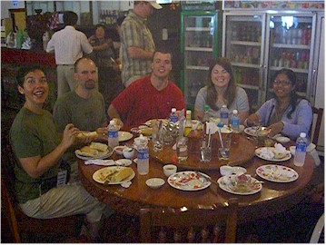
with our friends at breakfast.
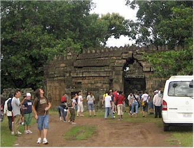
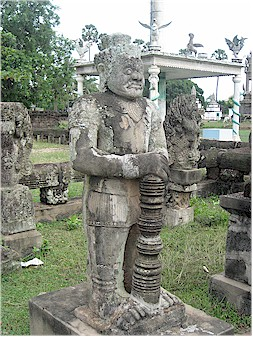
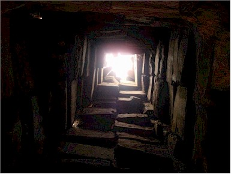
looking up a chimney-type area.
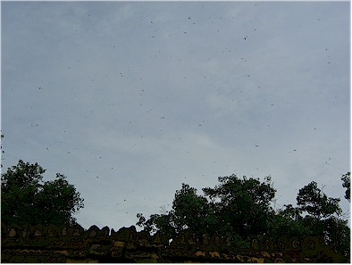
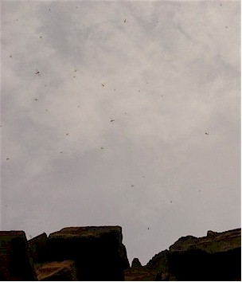
Two shots of the amazing numbers of Dragon Flies in the sky over the wat. It was strange.
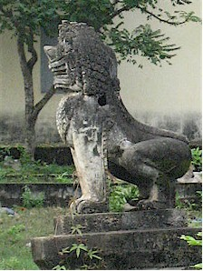
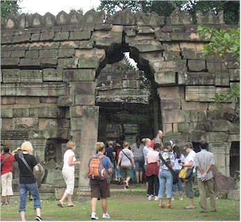
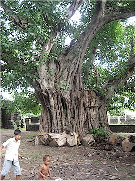
children playing in the area.
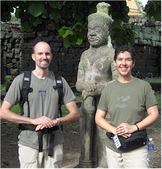
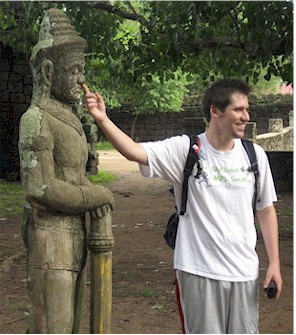
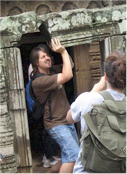
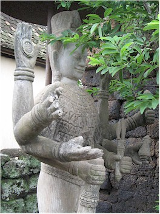
with all those hands!
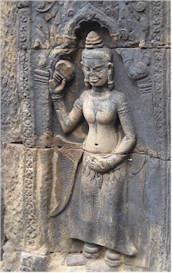
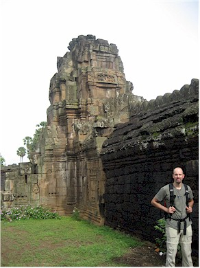
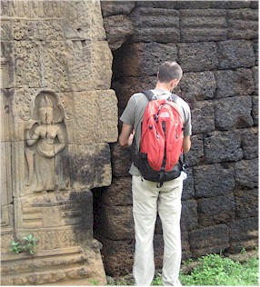
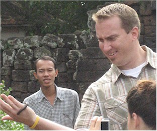
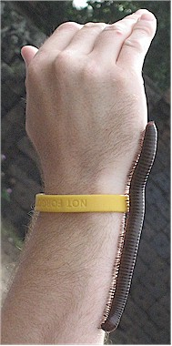
I didn't try it to find out.
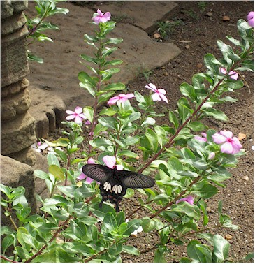
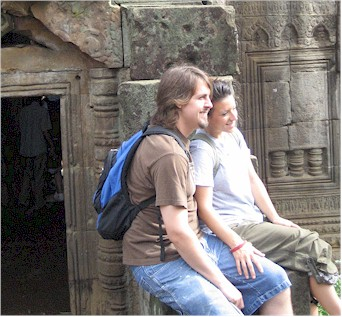
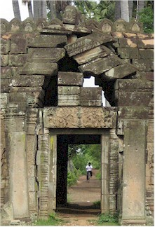
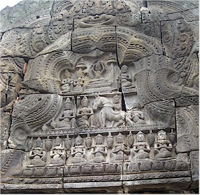
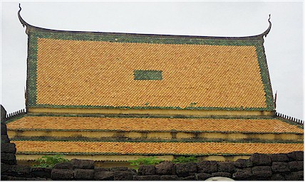
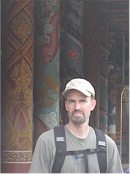
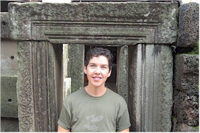
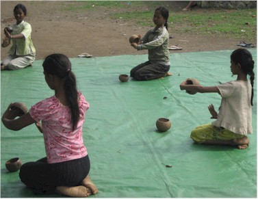
traditional dances for us.
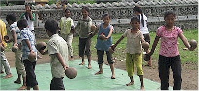
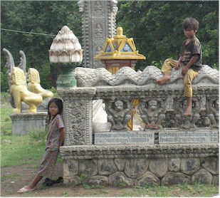

Movie Moment:
Part of the dance by the kids above.
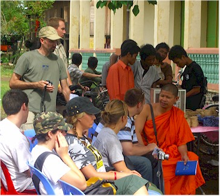
the orphanage from the head monk.
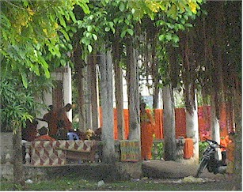
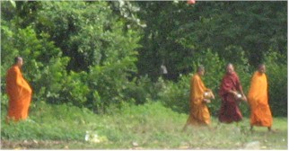
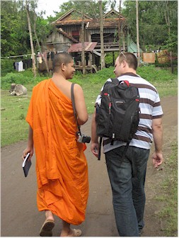
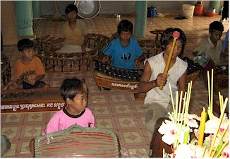
Meyer he said, "Oh she is very good, I watch her
show on TV all the time." Amazing!
I'm sure they are going to be very accomplished one day.
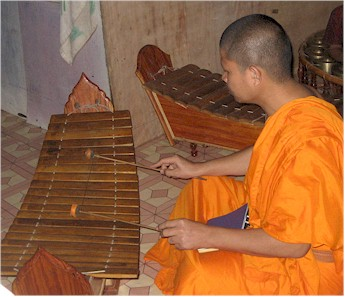
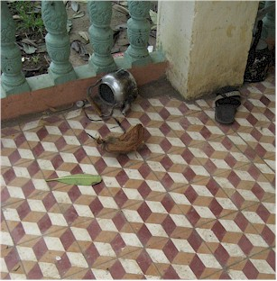
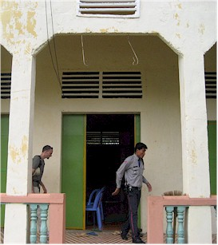
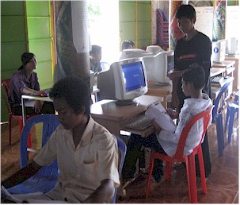
outside it was old and kind of dumpy-looking....
and office equipment.
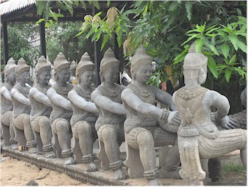
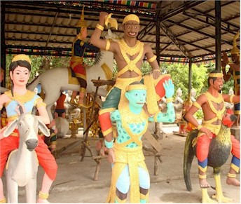
poor orphan kids sleep with these things so near!
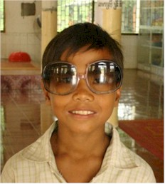
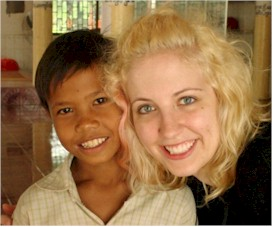
Erin shares her sunglasses and makes a new friend.
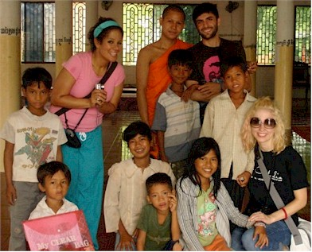
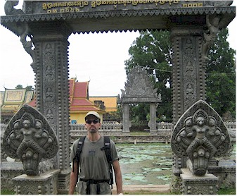
was not allowed to touch him. Here she is, keeping her distance. I
can almost hear it now, "I'm not touching you!"
he was posing for a "Most Wanted" poster!
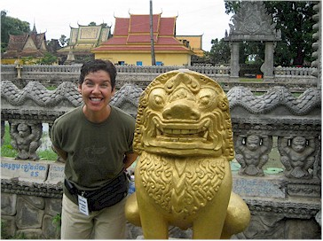
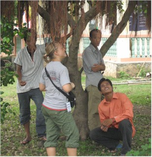
Chom has a beautiful smile
but I had a hard time catching
it in a picture.
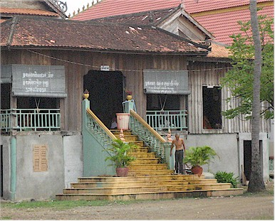
wrapped in a robe-type thing and sat on the steps. Then this man
dumped a bucket of water over the top of their head and they left. Strange.
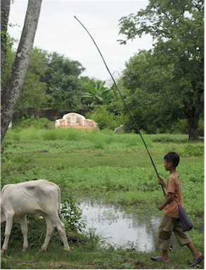
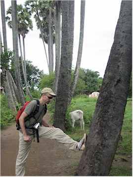
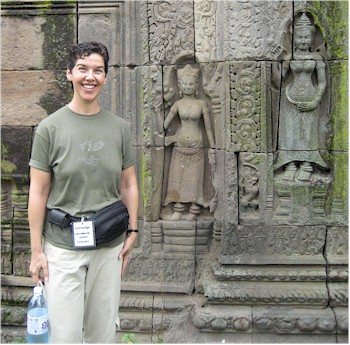
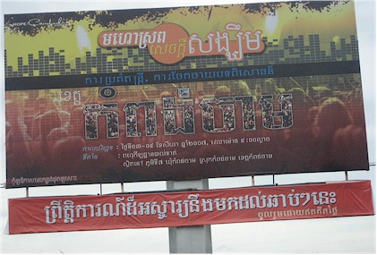
The heroes of the trip! Our drivers, they were very good to us.
One final time, we have our same (but tasty) meal in Kampong Cham.
with egg on it." or "Is there any more bread on your table?" or
"May I have another Coca please?" (Meaning a Coke, always in demand.)
sure I had enough water to drink.
I don't know why so many Cambodians make silly hand signs
when you try to take their picture, but it happens all the time!
to make sure we all go the right way.
We had our string of vans and were always the only white people
around. We were also usually the tallest people too. It was funny.
These cute kids play on top of the mounds of rock and
clay that we were there to move.
There were many low-lying areas around the Hope Center that were a mosquito
breeding ground.
Our assignment: level 6 large mounds of dirt using only strange hoes and
bamboo baskets.
They used to use hoes to make fire breaks.
was operating the hoe or holding the basket for the person filling it.
tarantula, frogs, a crab, it was like a zoo out there!
can't believe none of us got
heat stroke.
party to entertain the orphans.
Eric, looking a little flushed.
I wonder if it's his?!!
The following were taken by Gretchen of the play time before
the dedication got underway.
Destiny had made for me. While we were hauling dirt it
broke. This sweet little girl was fixing it for me.
could use to scoop water out.
look and said, "I'm not eating anything that came out of here."
His germ-o-phobia was in high gear.
I kept telling myself, "At least you're enclosed so it's better than going
behind a bush!" We were pretty wuss-ish about using squatters.
Yep, this was the bathroom. I think the plastic
tube is some version of a bidet, I'm not sure.
I used Handi-wipes we had with us instead of the provided soap, and used
the bowl to scoop
some water out of the tank and pour it into the squatter to create a
flushing action. Interesting.
will live in the Hope Center.
now we will live in luxury for the next 4 days.
over an hour to get us checked into our rooms. But we're happy!
I'm pretty sure it's a cinch-sack.
was very pretty. We were just thrilled to be where we could have
nice hot showers again.


they provided. It was amazing!
operate it, but we eventually figured it out.

and controls. That thing was something!
Cambodia Index: 1 - 2 - 3 - 4 - 5 - 6 - 7 - 8 - 9 - 10 - 11 - 12